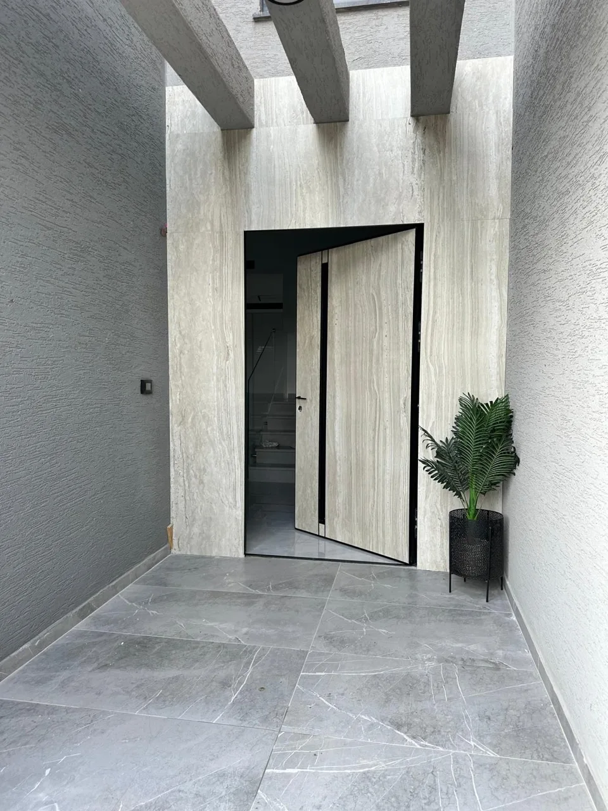

SELECTED ENTRANCES
כניסות
עם נוכחות.
מערכת דלתות קו אפס מתקדמת, המיועדת לפרויקטים אדריכליים שבהם דיוק, עיצוב, חוזק ועמידות חייבים לעבוד יחד.

PART OF THE ARCHITECTURE
הבית מתחיל
כאן.
המערכת מאפשרת לקבל דלת המשתלבת באופן כמעט מושלם במישור הקיר, עם משקוף נסתר, צירים סמויים ומגוון רחב של חיפויים – פורצלן, HPL, אלומיניום ועוד.
BEAUTY. BUILT IN.
מערכת שנבנתה
כדי להחזיק
לאורך שנים
עובי הכנף: כ־85 מ”מ.
מבנה הכנף והעמידות
הכנף בנויה במבנה רב־שכבתי הכולל קורות חיזוק פנימיות, פרופילי אלומיניום, שכבות חיזוק וחומרי מילוי ייעודיים, המאפשרים להתמודד עם משקל החיפוי ועם דרישות של פתחים גדולים.
המערכת תוכננה מתוך חשיבה על יציבות, חוזק ועמידות לאורך זמן – גם כאשר מדובר בדלתות גדולות וכבדות.
ONE CONTINUOUS LINE
חיפוי
ללא גבולות.
אחד היתרונות המרכזיים של המערכת הוא האפשרות להפוך את הדלת לחלק בלתי נפרד מהקיר.
ניתן לשלב:
גרניט פורצלן | HPL | אלומיניום | חיפויים אדריכליים נוספים
כך ניתן להמשיך את אותו חומר, טקסטורה וגוון מהקיר אל הדלת – וליצור חזית אדריכלית רציפה, נקייה ומדויקת.
לכל הדלתותFROM OUTSIDE.
TO WITHIN.
מבט אל הבית.
ואז, הדלת נפתחת.
תיאור הסרטון
הסרטון מציג מעבר מהחצר ומבריכת הבית אל דלת הכניסה, ולאחר מכן את פתיחת הדלת לתוך הבית. הסרטון מוצג ללא קול.
THE DETAILS MAKE THE DOOR
פרזול ברמה
הגבוהה ביותר
המערכת מאפשרת שילוב של צירים סמויים בעלי כושר נשיאה גבוה, מנעולים איכותיים ופתרונות נעילה מתקדמים.
בהתאם למפרט המערכת ניתן לשלב גם מנעול Mottura, סף תחתון אקטיבי ופתרונות אטימה היקפיים, לקבלת סגירה מדויקת ואיכותית.
אטימה ובידוד
מבנה הכנף והמערכת ההיקפית מאפשרים לשלב פתרונות אטימה מתקדמים, לרבות אטם היקפי וסף תחתון אקטיבי.
התוצאה: תחושת סגירה איכותית, שיפור באטימה והפחתת מעבר רעשים ואוויר, בהתאם למפרט הסופי של הדלת.
בטיחות, חוזק ועמידות
המערכת מתוכננת עם שכבות חיזוק וחומרים ייעודיים, לרבות חומרים בעלי מאפיינים אקוסטיים ופתרונות המתאימים לדרישות בטיחות ואש בהתאם למפרט ולתקן הרלוונטי.
A DIFFERENT EXPRESSION. SAME PRECISION.
לכל בית,
הכניסה שלו.
CRAFTED OVER GENERATIONS
40שנות ניסיון
דיוק שרואים.
איכות שמרגישים.
מאחורי הטכנולוגיה עומדות 40 שנות ניסיון, ידע מעשי ויכולת לייצר פתרונות מותאמים לפרויקטים מורכבים.
אנחנו יודעים לקחת דרישה אדריכלית – גובה, רוחב, משקל, סוג חיפוי, כיוון פתיחה ודרישות פרזול – ולהפוך אותה למערכת דלת מדויקת, חזקה ואסתטית.
תיאור הסרטון
הסרטון מציג שלבים בייצור הדלת במפעל: עבודה על חלקי הכנף והרכבת המערכת. הסרטון מוצג ללא קול.